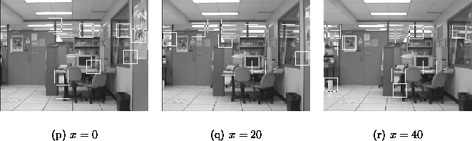
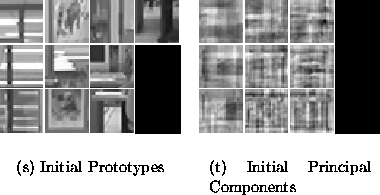
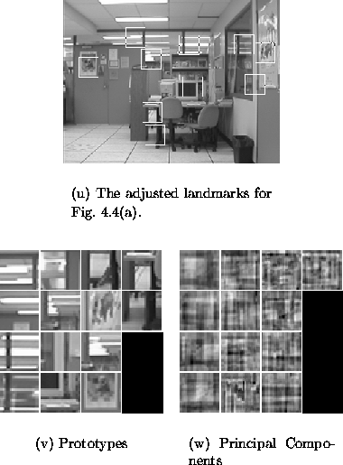
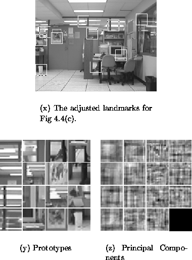
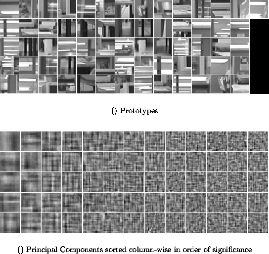

Figure 4.4: The initial images and landmark candidates.
As a concrete example, we will step through the tracking method over a series of three images, applying Algorithm 2.1 to each. The images used are shown in Figure 4.4 with their initial candidate landmarks superimposed as squares. At each step the landmarks under consideration will be depicted along with their matching prototypes in the database. As new prototypes are detected, they are added to the set of depicted prototypes.

Figure 4.5: Tracked landmarks and eigenlandmarks built from the bootstrap image.

Figure: Results of adding Figure 4.4(a) to the database.

Figure: Results of adding Figure 4.4(c) to the database.
Figure 4.8(a) depicts the set of prototypes for all the tracked landmarks found for a wider sampling of the environment depicted in Figure 4.4. The images are collected at 20cm intervals over a 3.0m by 1.2m grid. The principal components of the subspace are depicted in Figure 4.8(b).

Figure: The final set of a) prototypes and b) principal components for a
traversal of the environment depicted in part in Figure 4.4.
Once tracking has been performed, a minor filtering operation is conducted on the tracked landmarks in order to remove outlier candidates and tracked landmarks. A tracked landmark is considered to be an outlier if very few candidate landmarks were matched to its prototype. Typically, we reject a tracked landmark if it has fewer than five matched candidates. Determining whether a particular candidate landmark is an outlier (in the context of the tracked landmark to which it matched) is less straightforward. We will tend to favour tracked landmarks which are ``well-behaved''. Ideally, this implies that the subspace encodings and image positions of the candidates in a tracked landmark behave smoothly as a function of camera pose. Assuming smoothness, however, implies that the best method for filtering the candidates is to fit them to a surface, which can be extremely problematic in the presence of outliers. Instead, we choose to model the distribution of candidates as a normal distribution and remove candidates which lie outside a two standard deviation envelope in the space defined by the subspace encodings and further augmented by the image position. Furthermore, we will later present a method for measuring a priori, the goodness of a particular tracked landmark, and which will help reduce any ill effects of missing outliers, or mistakenly removing good candidates.
In this Chapter, we developed a method for recognising and tracking landmarks over the configuration space. The results in Figure 4.3 suggest that the method works quite well. Chapter 5 will present the central contribution of this thesis - a method for estimating camera pose given a set of tracked landmarks and the image currently in view.